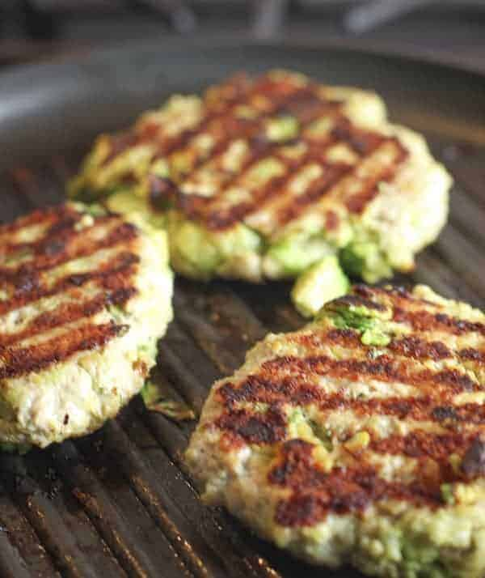
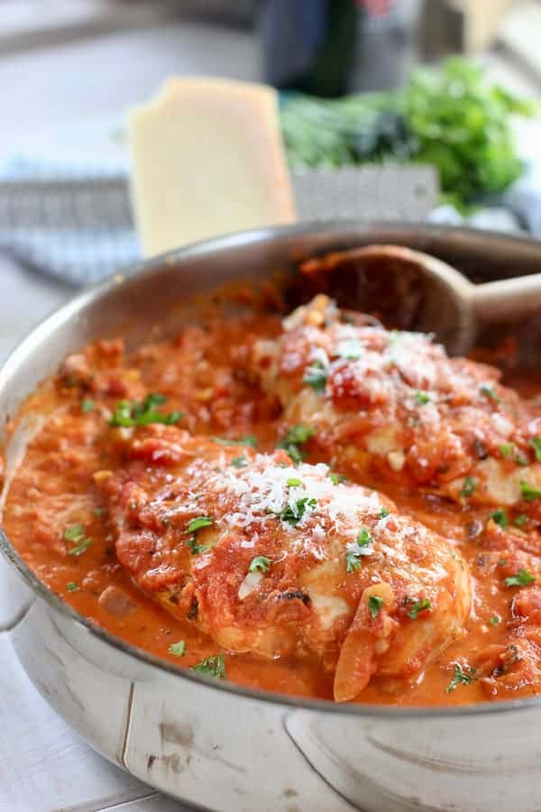
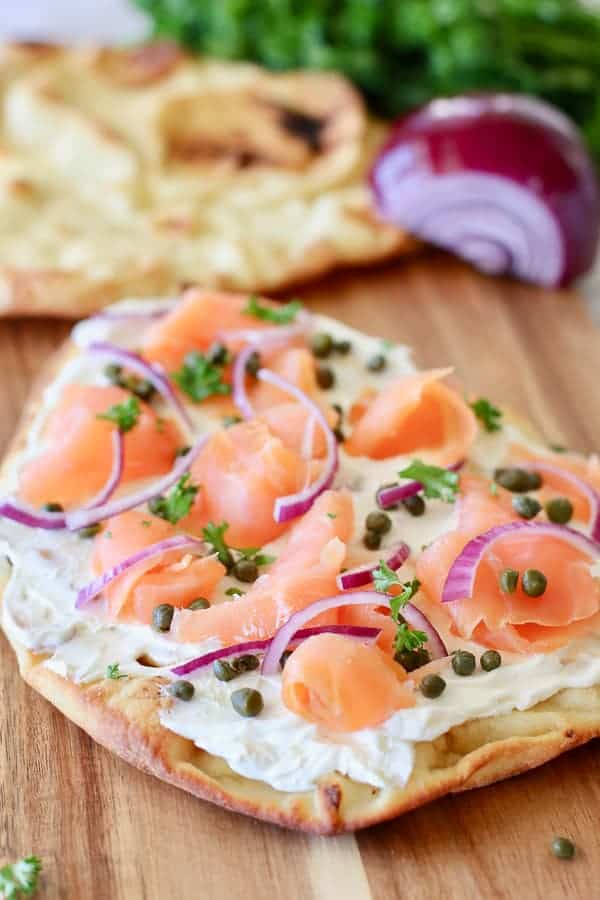
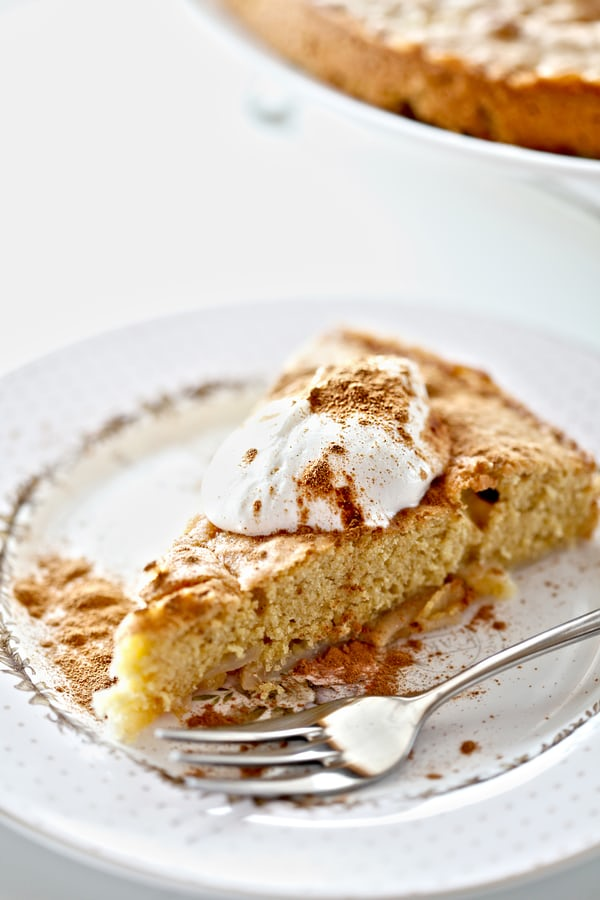
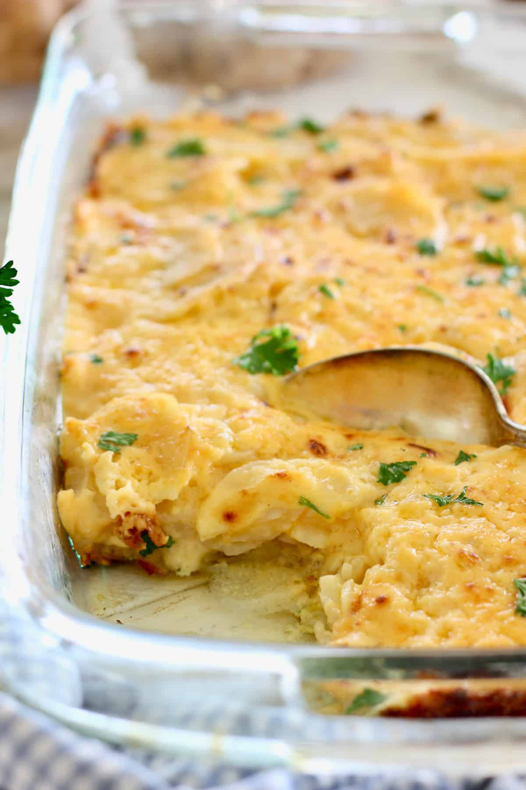
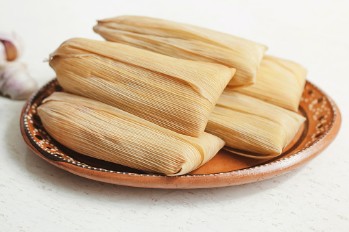
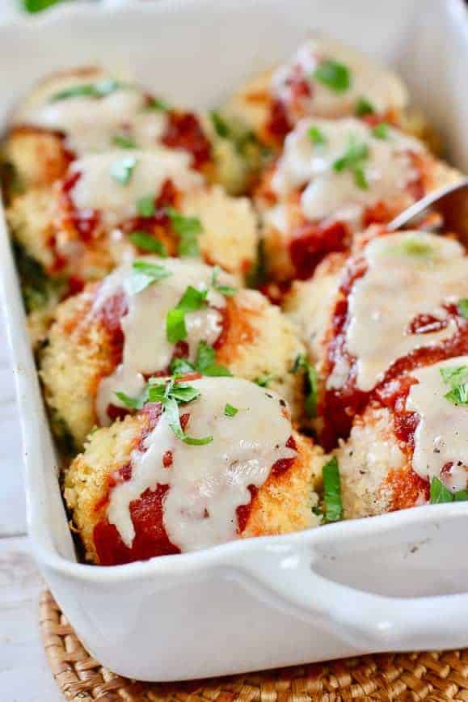
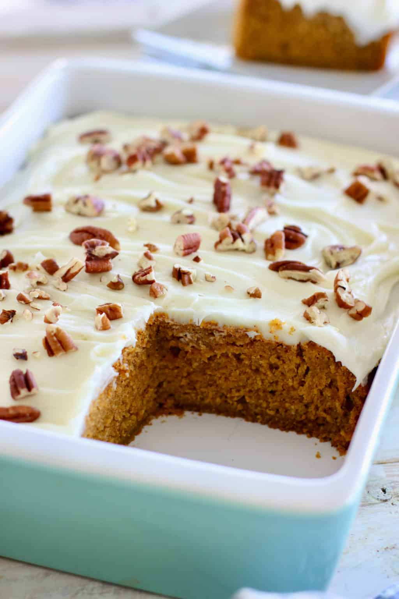

Here is some of the best recipes from 2020. Because of Covid-19 many people around the world is trying new and exiting food recipes while there stuck at home, and many of the recipes is actually good. This recipes comes from many websites, social media and people I know. So in this article you can find some of the most delicious food items you have to try.
The avocado burger is delicious burger, with ground chicken and fresh avocado. It is served warm, either from the oven or a grill. In todays society, people is more willing to try new kind of food, so why not try the Chicken Avocado Burger. It is a burger bomb that’s super healthy and delicious!
You can find the recipe in
https://laughingspatula.comWho dosn't like some good grilled chicken. It is healthy, flavourful and juicy. But what if you had a chicken breast covered in tomato sauce, and just a tiny touch of cream and onion. Chicken breasts do not have to be boring…I repeat, not boring! We eat so much chicken around here I’m surprised we don’t grow feathers and cluck. But it’s lean, quick cooking and a canvas for just about anything!
You can find the recipe in
https://laughingspatula.comThis Smoked Salmon Pizza makes an easy and elegant appetizer or light meal. Made with store bought pizza crust, flat bread or naan, topped with cream cheese, smoked salmon, onion and capers! The cream cheese is fresh, and baked with a thin layer of crust. The salmon can be salty, or regular and is topped beautifuly on the pizza dough.
You can find the recipe in
https://laughingspatula.comThe apple cake have been known for centuries. The apple cake was Invented by Geoffrey Chaucer, from England. And dang did he make good apple pies and cakes. The apple cake consist mainly from sugar, fresh apples, butter, baking powder, cinamon and a little pinch of salt. You can also add some lime or lemon, if you want to give the you want to give the cake a little acidity.
You can find the recipe in
https://www.sweetestmenu.comThis cake is moist and has the perfect crumb. I cannot imagine making a chocolate cake using any other recipe. You might remember eating a big piece of Chocolate cake on you birthday and falling in love with it. There is no doubt that chocolate cake is the best kind of cake ever existed, but did you know that chocolate cake was made by a physician. His name was James Baker and invented the Chocolate Cake by grinding cocoa beans between two massive circular millstones. His reputation in 1764, didn't last long before a cookbook author named Eliza Leslie, first launced chocolate cake recipe in 1847 in The Lady's Receipt Book.
Nothing says I love you like cheese and potatoes! Well, except for wine and chocoate? But today it’s cheese and potatoes! This easy to make, simple fresh dish will feed your family and then some! Hello leftovers! This fail proof easy to follow Cheesy Scalloped Potato recipe is made with just a few ingredients and can feed a crowd at the Holidays or any day! Fresh butter, milk, potatoes and cheese…so delish, so simple!
You can find the recipe in
https://laughingspatula.comTamales is a mexican dish, which is very popular in Mexico. Tamales, especially those made of ground amaranth, also took on a religious connotation due in part to their use as offerings to various gods. As a result, the Catholic Church banned tamales and amaranth. Execution was the likely punishment for those caught making this food.As for the tamales’ wrapping, which serves to help the steaming process, corn husks are the most widely used. However, banana leaves are more common in tropical areas.
You can find the recipe in
https://tastesbetterfromscratch.comFrom traditional to unique burgers, the menu items at this Las Vegas restaurant use the freshest, quality ingredients. Beef patties are cooked over an open flame fuelled by hard woods — Gordon Ramsay Burger is the only gourmet burger restaurant on the Strip to use this method — creating a more complex and powerful flavor. In addition to juicy burgers, this popular Vegas restaurant also offers sweet potato fries with vanilla powdered sugar and pork belly bao buns. Looking for some spice? The Devil Dog will do it. These all-beef dogs are simmered in devilish hot sauce, then fire-kissed on the open grill. There is many types of the Ramsay burger, but non of the burgers is more delicious like the video below.
Baked chicken breast cutlets stuffed with ricotta and spinach, rolled in panko crumbs and topped with marinara and fresh mozzarella. They can be served in a long pan, and look like italian meatballs stuffed with cheese.
You can find the recipe in
https://laughingspatula.comThis cake is amazingly easy with such simple ingredients. This incredibly easy to make Pumpkin Cake will be your favorite fall recipe! It tastes like a carrot cake, but have a little spice to it. The pumpkin pie can be topped with almond, but if you have nut allergies you could top it of with raisins.
You can find the recipe in
https://laughingspatula.com